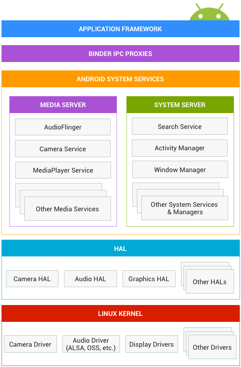

In this document
Android gives you the freedom to implement your own device specifications and drivers. The hardware abstraction layer (HAL) provides a standard method for creating software hooks between the Android platform stack and your hardware. The Android operating system is also open source, so you can contribute your own interfaces and enhancements.
To ensure devices maintain a high level of quality and offer a consistent user experience, each device must pass tests in the compatibility test suite (CTS). The CTS verifies devices meet a quality standard that ensures apps run reliably and users have a good experience. For details on the CTS, see Compatibility.
Before porting Android to your hardware, take a moment to understand the Android system architecture at a high level. Because your drivers and the HAL interact with Android, knowing how Android works can help you navigate the many layers of code in the Android Open Source Project (AOSP) source tree.
Figure 1. Android System Architecture
Application framework
The application framework is used most often by application developers. As a hardware developer, you should be aware of developer APIs as many map directly to the underlying HAL interfaces and can provide helpful information about implementing drivers.
Binder IPC
The Binder Inter-Process Communication (IPC) mechanism allows the application framework to cross process boundaries and call into the Android system services code. This enables high level framework APIs to interact with Android system services. At the application framework level, this communication is hidden from the developer and things appear to "just work."
System services
Functionality exposed by application framework APIs communicates with system services to access the underlying hardware. Services are modular, focused components such as Window Manager, Search Service, or Notification Manager. Android includes two groups of services: system (services such as Window Manager and Notification Manager) and media (services involved in playing and recording media).
Hardware abstraction layer (HAL)
The hardware abstraction layer (HAL) defines a standard interface for hardware
vendors to implement and allows Android to be agnostic about lower-level driver
implementations. The HAL allows you to implement functionality without
affecting or modifying the higher level system. HAL implementations are
packaged into modules (.so) file and loaded by the Android system
at the appropriate time.

Figure 2. Hardware abstraction layer (HAL) components
You must implement the corresponding HAL (and driver) for the specific hardware
your product provides. HAL implementations are typically built into shared
library modules (.so files). Android does not mandate a standard
interaction between your HAL implementation and your device drivers, so you have
free reign to do what is best for your situation. However, to enable the Android
system to correctly interact with your hardware, you must abide
by the contract defined in each hardware-specific HAL interface.
Standard HAL structure
Each hardware-specific HAL interface has properties that are defined in
hardware/libhardware/include/hardware/hardware.h, which
guarantee that HALs have a predictable structure.
This interface allows the Android system to load the correct versions of your
HAL modules in a consistent way. There are two general components
that a HAL interface consists of: a module and a device.
A module represents your packaged HAL implementation, which is stored as a shared library (.so file). It contains
metadata such as the version, name, and author of the module, which helps Android find and load it correctly. The
hardware/libhardware/include/hardware/hardware.h header file defines a
struct, hw_module_t, that represents a module and contains information such as
the module version, author, and name.
In addition, the hw_module_t struct contains
a pointer to another struct, hw_module_methods_t, that contains a pointer to
an "open" function for the module. This open function is used to initiate communication with
the hardware that the HAL is serving as an abstraction for. Each hardware-specific HAL usually
extends the generic hw_module_t struct with additional information
for that specific piece of hardware. For example in the camera HAL, the camera_module_t struct
contains a hw_module_t struct along with other camera-specific function pointers:
typedef struct camera_module {
hw_module_t common;
int (*get_number_of_cameras)(void);
int (*get_camera_info)(int camera_id, struct camera_info *info);
} camera_module_t;
When you implement a HAL and create the module struct, you must name it
HAL_MODULE_INFO_SYM. For instance, here is an example from the Nexus 9 audio HAL:
struct audio_module HAL_MODULE_INFO_SYM = {
.common = {
.tag = HARDWARE_MODULE_TAG,
.module_api_version = AUDIO_MODULE_API_VERSION_0_1,
.hal_api_version = HARDWARE_HAL_API_VERSION,
.id = AUDIO_HARDWARE_MODULE_ID,
.name = "NVIDIA Tegra Audio HAL",
.author = "The Android Open Source Project",
.methods = &hal_module_methods,
},
};
A device abstracts the actual hardware of your product. For example, an audio module can contain
a primary audio device, a USB audio device, or a Bluetooth A2DP audio device. A device
is represented by the hw_device_t struct. Like a module, each type of device
defines a more-detailed version of the generic hw_device_t that contains
function pointers for specific features of the hardware. For example, the
audio_hw_device_t struct type contains function pointers to audio device operations:
struct audio_hw_device {
struct hw_device_t common;
/**
* used by audio flinger to enumerate what devices are supported by
* each audio_hw_device implementation.
*
* Return value is a bitmask of 1 or more values of audio_devices_t
*/
uint32_t (*get_supported_devices)(const struct audio_hw_device *dev);
...
};
typedef struct audio_hw_device audio_hw_device_t;
In addition to these standard properties, each hardware-specific HAL interface can define more of its own features and requirements. See the HAL reference documentation as well as the individual instructions for each HAL for more information on how to implement a specific interface.
HAL modules
HAL implementations are built into modules (.so) files and are dynamically linked by Android when appropriate.
You can build your modules by creating Android.mk files for each of your HAL implementations
and pointing to your source files. In general, your shared libraries must be named in a certain format, so that
they can be found and loaded properly. The naming scheme varies slightly from module to module, but they follow
the general pattern of: <module_type>.<device_name>.
For more information about setting up the build for each HAL, see its respective documentation.
Linux kernel
Developing your device drivers is similar to developing a typical Linux device driver. Android uses a version of the Linux kernel with a few special additions such as wake locks (a memory management system that is more aggressive in preserving memory), the Binder IPC driver, and other features important for a mobile embedded platform. These additions are primarily for system functionality and do not affect driver development.
You can use any version of the kernel as long as it supports the required features (such as the binder driver). However, we recommend using the latest version of the Android kernel. For details on the latest Android kernel, see Building Kernels.